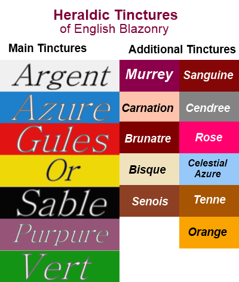

inctures are the heraldic colours and metals used in blazonry. DrawShield supports the following tinctures.
Argent, Azure, Gules, Or, Sable, Purpure, Vert (and their conventional heraldic abbreviations)
Murrey, Carnation, Brunatre, Bisque, Senois, Sanguine, Cendree, Rose, Celestial Azure, Tenne, Orange
ll of these tinctures are illustrated here. The exact shade will depend on the colour scheme that you chose in the options panel.
There is a further set of colours that appear very rarely but are found in modern arms, including in American Military insignia:
iron, bronze, copper, lead, steel, buff, red-ochre, yellow-ochre, crimson
Heralds dislike repeating colours and will refer back to previous tinctures. The following such references are supported:
Of the field, of the first, of the second, of the third, of the fourth, of the last
In addition, if you do not provide a tincture where one is expected the next tincture encountered will be used in its place. E.g. in Azure a bend wavy and a chief sable the wavy bend will also be coloured sable.
Some charges may also be described as proper, in which case they will be given a tincture defined by Heraldic convention, for example a chough will be black with red beak and legs.
If the field of the shield consists of a two coloured division then an ordinary or charge on this field may be described as counterchanged. It will be coloured using the "opposite" colour from the underlying division. E.g. per bend azure and or, a fess counterchanged.
Drawshield also supports some other common colour names such as 'Red, Gold, White' etc. but it is good practice to only use the proper heraldic forms.
Also note that of the field does not necessarily mean the same as of the first. If for example the field is Per bend azure and or then of the field refers to the whole division, while of the first means the first mentioned colour, which is azure.